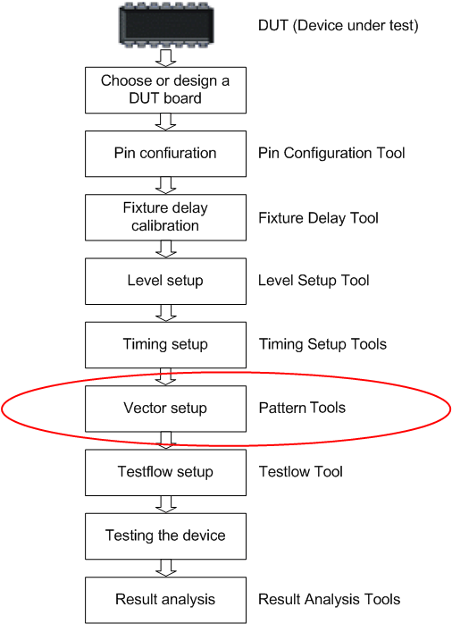

Dependencies Between the Timing Setup and the Vector Setup
You cannot generate any vectors if your Timing Setup isn't finished. When your test vectors are ready, you cannot make major changes to the Timing Setup, as these would lead to false interpretation of the Vector Memory contents. You can still change the position of edges.
Use the keep WFsets compatible mode when changing the timing, so that the interpretation remains correct. Refer to Keeping Waveform Sets Compatible.
The figure below shows all phases that are necessary to set up a test. The phase of setting up the vectors is highlighted.
